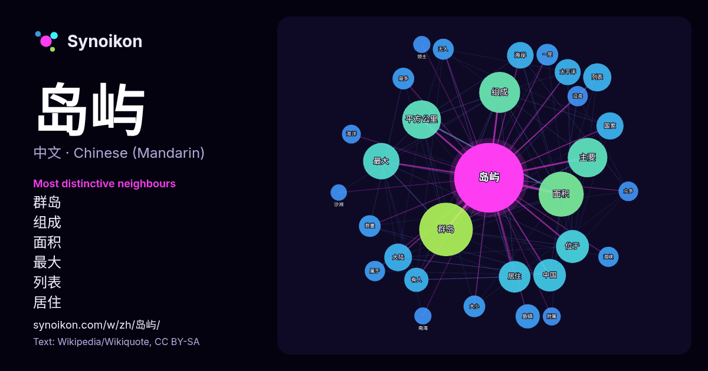

中文 · 每日一词列表
岛屿
“island” · 来自维基百科, Wikiquote 830 次出现中其周围的词。

最具特色的邻近词
- 群岛 86×
- 组成 38×
- 面积 28×
- 最大 24×
- 列表 24×
- 居住 24×
- 海岸 21×
- 位于 21×
- 大陆 21×
- 太平洋 20×
- 島嶼 19×
- 平方公里 19×
- 主要 16×
- 有人 16×
- 无人 15×
- 海峡 14×
- 数量 14×
- 沿海 13×
- 大小 13×
- 最多 13×
× = 比维基百科普通文本中多出的倍数。
最常见的邻近词
- 群岛 97
- 面积 69
- 组成 57
- 主要 53
- 平方公里 51
- 最大 45
- 位于 37
- 中国 36
- 居住 34
- 人口 33
- 列表 27
- 包括 27
- 大陆 26
- 中的 25
- 国家 25
- 海岸 24
- 太平洋 23
- 也是 20
- 島嶼 20
- 有人 20
上下文
- 島嶼或島（英語：island）是指於海洋、江河或湖泊中被水体圍繞，面积小于大陆的陆地区域。世界上面积最大的岛屿是北美洲的格陵兰岛，面积更大的陸地則不再被視為島嶼，而叫做「大陸」。在狹小的地域集中2個或以上的島嶼，即成「島嶼群」，大規模的島嶼群稱作「群島」或「諸島」，列狀排列的群島即為「列島」。而如果 Wikipedia snippets · 島嶼
- 島嶼灰狐（学名：Urocyon littoralis），是一种小型狐狸，生活在加利福尼亚州海峡群岛的六个岛屿。島嶼灰狐是美国最小的狐狸。島嶼灰狐有六个亚种，每个亚种生活在一个岛，例如聖克魯斯島嶼灰狐生活在聖克魯斯島。島嶼灰狐也叫海岸灰狐、短尾狐、岛狐、海峡群岛狐、海峡群岛灰狐、加利福尼亚海峡群岛狐和海岛灰狐。 Wikipedia snippets · 島嶼灰狐
- Belau），通稱帛琉或帕勞（Palau，旧称Belau或Pelew）是位于西太平洋的岛嶼国家。全国有约340座岛屿，属于密克罗尼西亚群岛中加罗林群岛的西链，总面积为459平方公里。人口最多的岛屿是科罗尔。首都恩吉鲁穆德位于临近岛屿巴伯尔道布岛，隶属于梅莱凯奥克州。帛琉的海上邻国包括印度尼西亚、菲律宾和密克罗尼西亚联邦。 Wikipedia snippets · 帛琉
- 广州市域内的岛屿主要为珠江水系的江心沙洲，多为泥沙冲积而成，故多以“沙”命名，岛屿总面积超过120平方公里。 Wikipedia snippets · 广州市岛屿列表
- 一，也是中華人民共和國法定的省份之一，其轄區包括臺灣及其附屬島嶼、澎湖群島，以及钓鱼岛及其附属岛屿。由於第二次国共内战后海峡两岸事實分治的政治格局，该省現僅處於法定設置狀態。其中，臺灣本島及澎湖列島等地實際由中華民國統治；钓鱼岛及其附属岛屿附近領海現由中華人民共和國及日本政府船舶交替巡邏。在中華民國 Wikipedia snippets · 台湾省 (中华人民共和国)
- Bahamas），通称巴哈马（英語：The Bahamas，i/bəˈhɑːməz/），是位於大西洋西侧廬卡雅群島上的一个島國，全國包含700座岛屿（以及小岛屿）和珊瑚礁。地處美国佛罗里达礁島群東南面，古巴主島和伊斯帕尼奥拉岛（海地和多米尼加）以北，特克斯和凯科斯群岛西北部，絕大多數的領土位於百慕達三角附近。 Wikipedia snippets · 巴哈马
- 日本島嶼列表列出所有現時日本政府主張領有權的島嶼。 日本是一个由14,125个岛屿组成的群岛國家，其中约260个岛屿有人居住。日本是东亚地區最大的岛国，也是世界第四大岛国。 据日本海岸警卫队1987年进行的一项调查，日本共有海岸线100米以上的岛屿6,852个。2023年2月28日，日本國土地理院宣 Wikipedia snippets · 日本島嶼列表
- 岛屿，面积743,330平方公里，是世界第三大岛，僅次於格陵蘭及新幾內亞，同時是亞洲第一大島。婆羅洲全境由印尼、馬來西亞及汶萊三國管轄，是世界上被最多國家管轄的島嶼。 属大陆岛，位于东南亚，处于岛屿东南亚的中心部分，赤道將婆羅洲大致均分。婆羅洲擁有全世界最古老的雨林，也是印尼唯一沒活火山的主要島嶼。形成原因為沉水作用。 Wikipedia snippets · 婆罗洲
更多词
于 2026-10-09 以默认设置预先计算（±5 个词，中等语料）。交互式图可用实时数据刷新。
界面为机器翻译，欢迎指正。